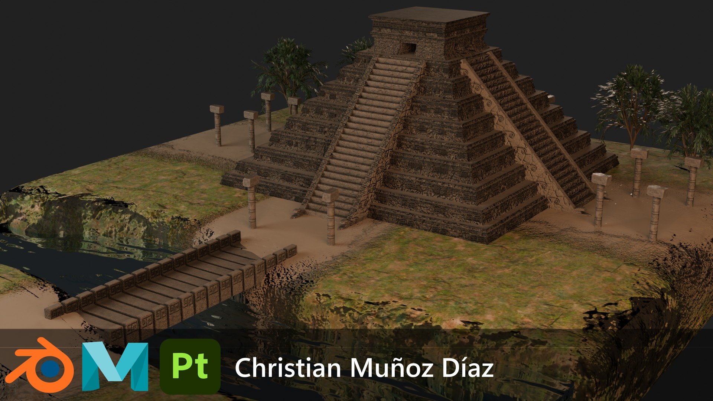
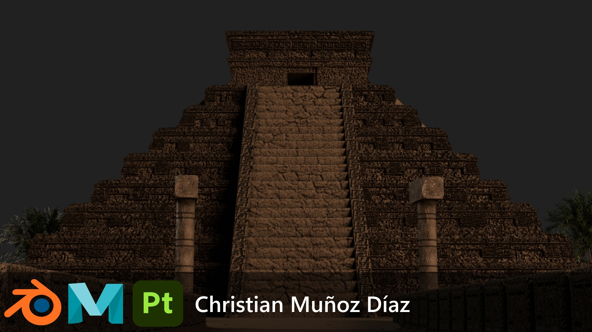
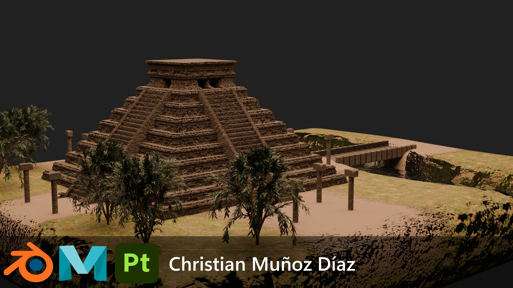

Proyecto escenario - Pirámide Mesoamericana
Desarrollo completo de un entorno modular inspirado en Chicén Itzá. Este proyecto incluye el modelado base de la estructura principal y los assets arquitectónicos complementarios (pilares y puentes). Enfocado en la optimización de geometría y el uso de texturas PBR para mantener la calidad visual.
Renders Finales



Assets 3D
Estructura Principal - El castillo
Esculpido y modelado base enfocado en silueta y proporciones, basado en la arquitectura maya, el templo de Kukulkan.
Prop Modular - Pilar
Malla optimizada con desdoble de UVs y texturizado PBR.
Prop Modular - Puente
Malla optimizada con desdoble de UVs y texturizado PBR.
Desglose Técnico
El flujo de trabajo se centró en la creación de un entorno modular optimizado para motores de tiempo real. usando como referencia El castillo o el Templo de Kukulkan, en un escenario diferente con un lago a un costado y elementos arquitectonicos como los pilares que están alineados hacia el templo, y un puente de piedra en el río.
Se priorizó la eficiencia en la geometría y la calidad visual mediante el uso de texturas PBR, asegurando que los modelos sean aptos para animación y renderizado en tiempo real.
Stack de Software
- Blender (Modelado base y Retopología)
- Substance 3D Painter (Texturizado PBR)
- Maya3D (Despliegue de UVs)
Optimización
- Flujo de trabajo Low-Poly
- Topología apta para animación/motores
Materiales
- Texturas PBR a 2K
- (Roughness, Height, Normal, Roughness, Metallic)